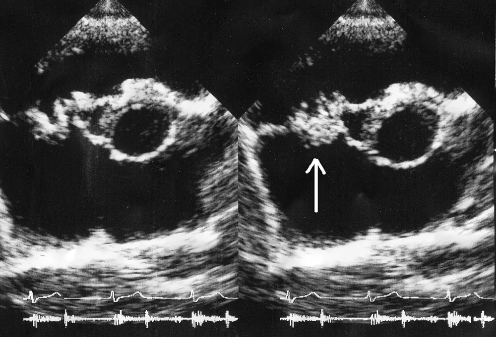

L'endocardite infectieuse est une infection microbienne de la surface endocardique, qui touche le plus souvent les valves natives et prothétiques du cœurwc68439-2. Elle se distingue d'une simple bactériémie, car les bactéries doivent se fixer sur l'endocarde ou sur un matériel intracardiaque pour y former une lésion infectéewd98409-9. Dans le LOT_001, une transpiration anormale n'évoque cette maladie que si elle s'associe à de la fièvre, à un terrain à risque ou à une bactériémie documentée.
La Société européenne de cardiologie a publié en 2023 ses recommandations pour la prise en charge de l'endocardite, dans l'European Heart Journalw842342-1. Ce texte a reçu des corrections publiées en 2023, en 2024 puis en 2025, de sorte qu'il faut lire la version corrigéew842342-4. Les critères diagnostiques de référence restent les critères de Duke, introduits en 1994 puis modifiés plusieurs fois pour intégrer les nouvelles techniques d'imageriewc68439-13. La version actuelle porte le nom de critères Duke-ISCVID 2023, où ISCVID désigne la Société internationale des maladies infectieuses cardiovasculairesw0e265d-5.
1.a Lexique : ce que chaque terme décide
Une est donc une lésion infectée, à la fois thrombotique et microbiennewd98409-9. L'image échographique seule ne prouve pas l'infection, car la lésion de départ est un thrombus stérilewd98409-9.
La végétation est issue d'une lésion endocardique stérile appelée endocardite thrombotique non bactérienne, faite de plaquettes et de fibrinewd98409-9. Lors d'une bactériémie, les microorganismes s'y fixent, s'y multiplient et s'entourent d'un biofilm de plaquettes et de fibrinewd98409-9. Ce biofilm protège les bactéries des défenses de l'hôte et des antibiotiques, ce qui explique la difficulté de traiter une infection installéewd98409-9.
Une endocardite sur valve native touche une valve sans prothèse, alors qu'une endocardite prothétique concerne un matériel implantéwbea7b0-25. Les formes liées à un dispositif comprennent l'endocardite après valve transcatheter, après valve pulmonaire percutanée et sur dispositif cardiaque implantablewbea7b0-25. Un patient porteur d'un dispositif et dont les hémocultures sont positives n'a pas forcément une infection de sondewbea7b0-34. Le risque est lié à la durée et de la source de la bactériémie, du type de dispositif et du germewbea7b0-34.
Une endocardite à hémocultures négatives est diagnostiquée lorsque les autres critères sont remplis alors qu'aucun germe n'est identifié dans le sangwc68439-16. Une endocardite est dite nosocomiale lorsqu'elle apparaît au moins 48 h après l'admissionwf45fc8-9. Elle l'est aussi lorsqu'elle est diagnostiquée dans les 48 h chez un patient exposé de façon notable aux soins, par exemple en hémodialysewf45fc8-9. Le classement d'un épisode en rejeté, possible ou certain repose sur les critères Duke-ISCVID 2023w0c22e5-19.
Le tableau suivant relie chaque terme à la décision qu'il commande.
Terme
Définition utile
Décision qui en découle
Végétation
Masse infectée de plaquettes, de fibrine et de bactérieswd98409-9
Le lecteur retient que la bactériémie signale un risque, alors que la lésion endocardique ou intracardiaque fait le diagnostic d'endocarditewc68439-13wd98409-9.
2. Épidémiologie (Suisse, puis Europe)
Une cohorte nationale suisse a analysé 15 255 hospitalisations pour endocardite entre 2012 et 2021 dans les données de facturation hospitalièrew6185e6-3w6185e6-4. Le nombre annuel de cas est passé de 1361 en 2012 à 1636 en 2021w6185e6-4. Ces chiffres comptent des hospitalisations et non des personnes, donc ils ne donnent pas une incidence par habitantw6185e6-3.
Dans la même cohorte, la part de Staphylococcus aureus est passée de 19,8 % à 30,0 %, et celle des streptocoques de 17,6 % à 24,4 %w6185e6-4. Par ailleurs, l'endocardite à S. aureus a donné la mortalité hospitalière la plus élevée, soit 19,9 %, avec 30,3 % de décès à six mois et 44,2 % d'admissions aux soins intensifsw6185e6-4. Les séjours les plus longs concernaient les entérocoques, avec 23,9 jours en moyenne, et S. aureus, avec 23,8 joursw6185e6-4. Les auteurs relient cette évolution au vieillissement de la population et à l'usage croissant de dispositifs endovasculairesw6185e6-2.
Aucune source lue ne donne la fréquence de l'endocardite parmi les personnes qui consultent pour une transpiration anormale, ce qui interdit d'estimer une probabilité prétest chiffrée.
2.a Le terrain a changé
Dans les pays à revenu élevé, l'endocardite sur valve native touche surtout des patients âgés, avec une valvulopathie dégénérative et de multiples comorbiditéswbea7b0-2. Les cas associés aux soins représentent jusqu'à 47 % des endocarditeswbea7b0-2. En outre, le risque est multiplié jusqu'à cinq fois chez les personnes âgées par rapport à la population généralewbea7b0-5. Dans ce groupe, la maladie se manifeste souvent de façon atypique, avec des symptômes généraux peu spécifiques, une fièvre atténuée ou une confusionwbea7b0-6.
Les endocardites sur prothèse représentaient environ 5 % des cas dans les premières études, alors qu'elles atteignent aujourd'hui jusqu'à 30 % des caswbea7b0-25. Leur mortalité hospitalière peut atteindre 27 %, et la mortalité à un an approche 37 %wbea7b0-25. Après remplacement valvulaire aortique percutané, l'incidence rapportée varie de 0,3 à 2 cas par 100 personnes-annéeswbea7b0-26. Dans le registre suisse SwissTAVI, elle culminait en période périprocédurale avec 2,59 cas par 100 personnes-années, puis diminuait à 0,71 et à 0,4wbea7b0-27.
L'hémodialyse chronique est l'un des principaux facteurs liés aux soins, avec une incidence de 1,7 à 2 cas pour 1000 patientswbea7b0-9. En outre, les cathéters veineux centraux multiplient par 3,5 le taux observé avec une fistule artérioveineusewbea7b0-10. Les personnes qui s'injectent des drogues ont un risque jusqu'à 100 fois supérieur à celui de la population généralewbea7b0-20. Cette population représentait 6,9 % des patients du registre européen EURO-ENDO, contre 22,2 % des cas dans une série américainewbea7b0-21.
Le tableau suivant permet de retenir les chiffres avec leur population et leur source.
Ce tableau montre que l'endocardite moderne survient souvent chez un patient exposé aux soins, ce qui change les questions à poser et les germes à craindrewbea7b0-2w6185e6-4.
2.b Histoire naturelle et pronostic
La mortalité hospitalière de l'endocardite se situe entre 15 % et 30 %w37576c-4. Elle varie de 25 % à 47 % lorsque S. aureus est en cause, alors qu'elle n'est que de 4 % à 9 % pour les streptocoquesw37576c-5. Une durée des symptômes supérieure à un mois avant le diagnostic et la chirurgie, quand elle est indiquée, sont associées à une évolution plus favorablew37576c-5. Les valeurs de cohortes soignées ne décrivent pas l'évolution sans traitement, qui n'est pas chiffrée dans les sources lues.
Dans une cohorte de 470 adultes, 124 sont décédés, soit une mortalité de 26,4 %wf45fc8-33. En effet, les complications hospitalières comprenaient une insuffisance cardiaque nouvelle ou aggravée dans 27,9 % des cas, une embolie septique dans 25,1 % et une embolie cérébrale dans 18,9 %wf45fc8-24.
3. Physiopathologie
La maladie commence par une lésion de l'endothélium ou un flux anormal sur une valve altérée, qui attire plaquettes et fibrinewd98409-9. Cette lésion stérile appelée endocardite thrombotique non bactérienne constitue le terrain où les bactéries circulantes vont se fixerwd98409-9. Les bactéries s'y multiplient ensuite et s'entourent d'un biofilm, ce qui forme la végétation maturewd98409-9.
3.a De la porte d'entrée à la bactériémie
Les streptocoques oraux vivent dans la cavité buccale et la plaque dentaire, et leurs adhésines se lient aux plaquettes et à la fibrinewd98409-10. Le brossage, le passage du fil dentaire et la mastication produisent chaque jour des bactériémies transitoires, dont l'effet cumulé dépasse de plusieurs ordres de grandeur celui des actes dentaires occasionnelswd98409-11. Les staphylocoques, les entérocoques et les autres germes ne dépendent pas des soins dentaires et ne répondent donc pas à une prophylaxie dentairewd98409-10.
Les procédures invasives non dentaires créent d'autres portes d'entréew32d770-12. Une étude suédoise a associé l'endocardite à la chirurgie coronarienne, aux gestes cutanés, aux transfusions, à la dialyse, à la ponction de moelle et à certaines endoscopiesw32d770-12. Chez les patients dialysés, le type d'abord vasculaire peut influencer le risque de bactériémie, donc celui d'endocarditewbea7b0-10.
3.b Pourquoi S. aureus est si redoutable
S. aureus adhère efficacement à l'endothélium lésé et au matériel prothétique, envahit et détruit rapidement les tissus, provoque des bactériémies persistantes, embolise souvent et forme un biofilmw37576c-5. Cette virulence explique que S. aureus prédise les embolies et une mortalité précoce élevéew37576c-5. Environ 12 % des patients atteints de bactériémie à S. aureus développent une endocardite, d'où l'intérêt d'une échographie systématiquew318a1c-18.
3.c Pourquoi le traitement est long
Les bactéries enfouies dans les végétations sont peu accessibles aux antibiotiques et à la réponse immunitaire de l'hôtew37576c-7. La forte densité bactérienne réduit l'efficacité de certains antibiotiques, ce que l'on appelle l'effet inoculum, et la végétation forme en outre une barrière à la pénétration des médicamentsw37576c-7. Le traitement standard comporte donc plusieurs semaines d'antibiotiques par voie intraveineuse, soit de 2 à 6 semainesw37576c-2w37576c-1.
3.d Conséquences cardiaques, emboliques et immunologiques
En effet, la destruction valvulaire provoque une régurgitation modérée à sévère dans 51,1 % des caswf45fc8-23. Elle provoque aussi des fuites paravalvulaires dans 20,0 %, des valves flottantes dans 12,1 % et des abcès paravalvulaires dans 6,4 %wf45fc8-23. Des fragments de végétation migrent dans la circulation : le système nerveux central est le site d'embolisation le plus fréquent, suivi des organes abdominaux, et la majorité des événements restent cliniquement muetswa9c851-4. Une végétation de plus de 10 mm augmente le risque d'embolie, avec un rapport de cotes de 2,28, et la mortalité, avec un rapport de cotes de 1,63w2f62fb-10.
Des phénomènes immunologiques s'ajoutent : ils sont observés dans 11 % des épisodes d'endocardite contre 2 % des épisodes sans endocarditew0c22e5-29. Les complications immunologiques décrites comprennent la glomérulonéphrite par complexes immunswf45fc8-30.
Le tableau suivant relie chaque perturbation à l'examen qui la montre et à la thérapeutique qui la corrige.
Chaque ligne du tableau montre qu'un mécanisme précis commande à la fois l'examen demandé et le geste thérapeutiquewd98409-9w37576c-7.
4. Démarche diagnostique
Devant une fièvre avec sueurs, le médecin écarte d'abord les diagnostics gravesw0c22e5-26. L'endocardite en fait partie lorsque le patient porte une valve prothétique, un dispositif ou une cardiopathie, ou lorsqu'une bactériémie est prouvéew0c22e5-26. Les hémocultures précèdent toujours l'antibiothérapie, car un traitement préalable stérilise le sang et masque le germewdb992c-6wc68439-16.
4.a Les différentiels discriminants, les graves d'abord
Premier différentiel grave : la bactériémie à S. aureus sans endocardite, qui exige pourtant de chercher l'endocardew318a1c-18. Ainsi, le score VIRSTA comprend des points pour les emboles, à la méningite, au dispositif intracardiaque, à l'endocardite antérieure, à l'usage de drogues, à la valvulopathie native et à la bactériémie persistantew318a1c-102. Un score inférieur à 3 a une valeur prédictive négative de 99,3 % pour l'endocardite, mais il classe environ 70 % des patients à haut risquew318a1c-19.
Le deuxième différentiel est une autre infection métastatique ou un foyer primitif extracardiaquewa9c851-7. Parmi 289 épisodes où l'endocardite a été exclue, les diagnostics alternatifs les plus fréquents étaient les infections ostéo-articulaires, dans 23 % des cas, puis les bactériémies sur cathéter, dans 19 %wa9c851-7. La bactériémie à S. aureus provoque aussi une spondylodiscite et une arthrite septique, d'où la palpation du rachis et des articulationsw318a1c-2w318a1c-13.
Troisième différentiel : l'infection d'un dispositif cardiaque, qui peut prendre la forme d'une infection de poche sans endocarditewbea7b0-34. Quatrième différentiel : l'endocardite à hémocultures négatives, souvent due à un antibiotique préalable, dans 35 % à 74 % des cas, ou à des germes à culture difficilewc68439-16. Le cinquième différentiel est une lésion thrombotique stérile, car la végétation débute comme un thrombus non infectéwd98409-9.
Le tableau suivant résume pour chaque différentiel l'élément qui tranche, le piège et la conduite.
Diagnostic
Élément qui tranche
Piège
Conduite
Bactériémie à S. aureus sans endocarditew318a1c-19
Score VIRSTA, échographie
Se fier à l'échographie transthoracique seule
Échographie transœsophagienne selon le score
Infection ostéo-articulaire ou sur cathéterwa9c851-7
Examen des articulations et du rachis, retrait du cathéter
Ce tableau rappelle qu'une imagerie négative n'exclut pas la maladie, car la sensibilité de l'échographie dépend de la taille de la lésion et du type de valvew0c22e5-11w0c22e5-13.
5. Anamnèse ciblée et drapeaux rouges
L'anamnèse cherche d'abord une fièvre, car elle reste le symptôme d'appel le plus fréquent, présente chez 61,5 % des patients d'une cohorte de 470 caswf45fc8-23wf45fc8-20. Les autres plaintes sont la dyspnée, dans 44,9 % des cas, les myalgies, dans 26,2 %, et les arthralgies, dans 21,9 %wf45fc8-23. Chaque question vise un mécanisme : la dyspnée évoque une insuffisance cardiaque par destruction valvulaire, et les douleurs articulaires une atteinte métastatiquewf45fc8-23wf45fc8-24.
5.a Questions ciblées et leur raison
Existe-t-il une valve prothétique, un dispositif cardiaque, une valve percutanée ou une endocardite antérieure ? Ces matériels et antécédents augmentent la probabilité de maladiew0c22e5-26w0c22e5-27.
Le patient est-il dialysé ou porteur d'un cathéter central ? Ces expositions aux soins constituent des portes d'entrée majeureswbea7b0-9wbea7b0-10.
Le patient s'injecte-t-il des drogues ? Cette pratique peut élever le risque jusqu'à 100 foiswbea7b0-20.
Un acte invasif récent a-t-il eu lieu ? Chirurgie coronarienne, geste cutané, transfusion, dialyse, ponction de moelle ou bronchoscopie ont été associés à l'endocarditew32d770-12.
Le patient a-t-il déjà reçu des antibiotiques ? Ils stérilisent les hémocultures et expliquent de nombreux cas sans germe isoléwc68439-16.
Depuis quand dure la maladie ? Une évolution de plus d'un mois avant le diagnostic est associée à un meilleur pronosticw37576c-5.
Chez la personne âgée, l'anamnèse doit rester large, car les symptômes généraux, la confusion ou une complication comme l'accident vasculaire peuvent masquer la fièvrewbea7b0-6.
Le tableau suivant permet de relier chaque drapeau rouge à sa signification et à l'action immédiate.
Hémocultures sans délai puis antibiotiqueswdb992c-6
Ces drapeaux orientent le tri : plus ils s'accumulent, plus l'endocardite doit passer devant les diagnostics fréquentswf45fc8-24.
6. Examen physique ciblé, région par région
L'examen physique cherche à localiser l'infection et ses complications, car une bactériémie à S. aureus peut se manifester par une fièvre isolée ou par des signes à distancew318a1c-10. Le normal se définit d'abord : un cœur sain produit deux bruits sans souffle, et la ventilation normale est un murmure vésiculaire symétriquew308a8c-11.
Lésions de Janeway de la paume. Cette photographie clinique montre la paume en vue palmaire, sous éclairage ambiant.
Le lecteur cherche d'abord les macules sur la photographie brute, puis il compare avec la copie annotée.
Sur la copie annotée de la paume, chaque repère signale une macule que la lecture guidée décrit.
La lecture guidée commence par le normal, puis elle décrit le signe.
La peau normale de la paume est uniformément rosée, sans tache.
Une macule érythémateuse indolore marque l'éminence thénar, et deux autres macules rouges, planes et bien limitées, la suivent.
Pièges.
Le nodule d'Osler est douloureux et siège au bout des doigts, alors que la lésion de Janeway reste indolore et plane.
Une éruption virale ou médicamenteuse peut imiter ces macules, et le contexte fébrile avec les hémocultures tranche.
Ce que l'image décide. Ce signe cutané d'embolie septique constitue un critère mineur de Duke. Il impose les hémocultures, puis l'échographie, avant toute antibiothérapie.
Image : Warfieldian, CC BY-SA 4.0, Wikimedia Commons, File:Janeway lesion.JPG, consultée le 2026-11-10. Copie annotée : œuvre dérivée sous la même licence.
6.a Cœur
Un souffle holosystolique rectangulaire traduit une régurgitation mitrale ou tricuspidienne, et un souffle diastolique décroissant traduit une insuffisance aortique ou pulmonairew308a8c-6. Les souffles diastoliques traduisent toujours une atteinte organique : ils débutent dès le bruit de fermeture de la valve, restent souvent doux et se recherchent avec la membrane du stéthoscope appuyée fermementw308a8c-3. Un souffle nouveau ou modifié doit donc faire évoquer une destruction valvulaire, qui s'observe dans 51,1 % des endocardites sous la forme d'une régurgitation modérée à sévèrewf45fc8-23.
Sur une prothèse aortique, un souffle diastolique de fuite signe en règle une fuite paravalvulaire par lâchage de suturesw308a8c-10. En revanche, sur une prothèse mitrale, un claquement d'ouverture assourdi ou l'apparition d'un roulement diastolique ou d'un souffle systolique évoque un dysfonctionnementw308a8c-10.
6.b Poumons, articulations, rachis et peau
Des râles crépitants fins aux bases traduisent une insuffisance cardiaque gauche, et l'abolition du murmure vésiculaire évoque un épanchement pleuralw308a8c-11w308a8c-12. Ensuite, les articulations se recherchent pour une douleur, un érythème ou un épanchement, et le rachis pour une douleur à la palpation évoquant une ostéomyélite vertébralew318a1c-13. Des manifestations cutanéomuqueuses sont présentes chez environ 18 % des patients atteints de bactériémie à S. aureusw318a1c-10.
6.c Neurologie, abords vasculaires et dispositifs
Un examen neurologique soigneux s'impose, car l'embolie cérébrale touche 18,9 % des patients et le système nerveux central est le site d'embolisation le plus fréquentwf45fc8-24wa9c851-4. Les sites de cathéter et les abords de dialyse sont inspectés, car un cathéter retenu augmente le risque de complications hématogènes comme l'endocarditew318a1c-32. La loge d'un stimulateur ou d'un défibrillateur est inspectée, car l'infection de poche peut coexister avec une endocardite sur sondewbea7b0-34.
Chez la personne âgée, les stigmates périphériques classiques manquent généralement, ce qui impose une vigilance accrue devant une bactériémie inexpliquéewbea7b0-6.
7. Approche syndromique
L'approche syndromique regroupe les signes en six syndromes, car l'endocardite se présente tantôt comme une infection, tantôt comme une maladie valvulaire, embolique ou immunologiquewf45fc8-23wf45fc8-24.
7.1 Syndrome infectieux et bactériémique
La fièvre touche 61,5 % des patients, avec des myalgies dans 26,2 % des cas et des arthralgies dans 21,9 %wf45fc8-23. Par ailleurs, un sepsis complique 20,9 % des épisodeswf45fc8-24. Le geste de recherche est l'hémoculture : deux paires correctement remplies, et répétées au moins une heure plus tard avant tout antibiotiquewdb992c-7wdb992c-11.
7.2 Syndrome valvulaire et insuffisance cardiaque
La régurgitation modérée à sévère concerne 51,1 % des patients, et une insuffisance cardiaque nouvelle ou aggravée apparaît dans 27,9 % des caswf45fc8-23wf45fc8-24. Le geste de recherche est l'auscultation, puis l'échographie qui montre la fuite et la végétationw308a8c-6wb6a5b9-8.
7.3 Syndrome embolique
Les embolies septiques surviennent dans 25,1 % des cas et les embolies cérébrales dans 18,9 %wf45fc8-24. En effet, les événements emboliques sont présents dans 64 % des épisodes d'endocardite contre 17 % des épisodes sans endocarditew0c22e5-29. Le geste de recherche est l'examen neurologique, complété par une imagerie de l'encéphale et de l'abdomenwa9c851-4wb6a5b9-15.
7.4 Syndrome immunologique
Les phénomènes immunologiques s'observent dans 11 % des endocardites, et la glomérulonéphrite par complexes immuns en est une expressionw0c22e5-29wf45fc8-30. Le geste de recherche est l'analyse d'urine et le dosage de la créatinine, car l'atteinte rénale aggrave le pronosticwf45fc8-28.
7.5 Syndrome de dispositif
Les infections de dispositifs vont de la poche à l'endocardite, et leur incidence se situe entre 0,5 % et 2,2 %wbea7b0-34wbea7b0-35. Le geste de recherche est l'inspection de la loge, puis l'imagerie de la sonde, car l'échographie transœsophagienne perd de la sensibilité sur les dispositifswb6a5b9-9.
7.6 Syndrome du cœur droit
Chez la personne qui s'injecte des drogues, l'endocardite touche surtout la valve tricuspide native, mais la moitié des cas atteint aussi des valves gaucheswbea7b0-23. La bactériémie à S. aureus peut donner des emboles pulmonaires septiques, ce qui fait rechercher toux, douleur thoracique et nodules pulmonairesw318a1c-2.
Le tableau suivant permet de résumer les syndromes avec leurs signes fonctionnels et physiques.
Un patient réunit souvent plusieurs syndromes, ce qui renforce la suspicion : une fièvre associée à une embolie cérébrale fait évoquer l'endocardite en prioritéw0c22e5-29.
8. Diagnostic positif et critères
Le diagnostic positif s'appuie sur les critères Duke-ISCVID 2023, qui conservent le format des critères de Duke avec des critères majeurs d'imagerie et de microbiologie, complétés par des critères mineursw0e265d-5. Cependant, les critères de Duke, introduits en 1994, ont une sensibilité globale d'environ 80 %wc68439-13. Chaque épisode est classé comme rejeté, possible ou certain, et le classement guide la suite de la prise en chargew0c22e5-19.
8.a Ce que les critères 2023 ont changé
Enterococcus faecium n'est plus considéré comme un germe typique d'endocardite, de sorte que deux hémocultures positives à ce germe ne forment plus qu'un critère mineurw0e265d-6. À l'inverse, une bactériémie nosocomiale à Enterococcus faecalis avec foyer connu devient un critère majeurw0e265d-8. Le stimulateur cardiaque a été ajouté comme critère mineur, ce qui a fait passer un cas de possible à certain dans le registre suédoisw0e265d-7.
Dans ce registre, 14 épisodes sont passés de certains à possibles parce que l'espèce n'était plus jugée typique, alors que 13 de ces patients avaient des végétations à l'échographiew0e265d-7. Les auteurs en concluent que la sensibilité des critères diminue lorsque E. faecium est exclu des germes typiquesw0e265d-8.
L'imagerie nucléaire compte désormais : des foyers intenses, focaux ou multifocaux et hétérogènes de fixation du FDG, apparus au moins 3 mois après la chirurgie valvulaire, forment un critère majeur d'imageriewb6a5b9-21. Ainsi, ce critère peut faire passer de nombreux cas d'endocardite prothétique suspectée de possible à certainwb6a5b9-21. Les phénomènes emboliques restent un critère mineur vasculaire : il était rempli dans 27 % des épisodes avant le TEP-scanner et dans 10 % de plus après luiwa9c851-10.
Les recommandations européennes de 2023 ont aussi mis à jour les critères diagnostiques, intégré de nouvelles modalités d'imagerie et précisé l'indication d'une chirurgie précoce quand le risque embolique est élevéwf45fc8-4.
Le tableau suivant permet de classer les critères selon leur usage.
Dispositif, phénomènes vasculaires, E. faeciumw0e265d-6
Complètent un cas possible
Aucun critère isolé ne suffit : le diagnostic combine la microbiologie, l'imagerie et la clinique, et un classement possible impose de poursuivre les examensw0e265d-5w0c22e5-19.
8.b Seuils de classement et performances des critères
Selon les critères Duke-ISCVID comme selon les critères ESC 2023, le diagnostic est certain lorsque deux critères majeurs, ou un critère majeur et trois critères mineurs, sont remplisw2812c6-7. Dans de rares cas, cinq critères mineurs sans critère majeur suffisent aussi à parler d'endocardite certainew2812c6-7. Les critères Duke-ISCVID comptent trois critères majeurs, contre deux dans les nouveaux critères ESCw2812c6-8.
Les ont été élargis : les critères Duke-ISCVID ont supprimé l'exigence de délai entre les hémocultures et ont ajouté plusieurs germesw7f9670-8. Tous les streptocoques sont désormais typiques, sauf Streptococcus pyogenes et Streptococcus pneumoniae, alors que seuls les streptocoques viridans et S. bovis l'étaient auparavantw7f9670-34. Les conditions prédisposantes comprennent aussi la bicuspidie aortique, l'endocardite antérieure, la cardiomyopathie hypertrophique et une régurgitation valvulaire plus que légèrew453fd0-195. La preuve pathologique peut maintenant reposer sur la PCR, le séquençage et l'hybridation in situw7f9670-8.
Un germe typique est un microorganisme dont, si deux hémocultures positives sont obtenues, elles forment un critère majeur de microbiologiew2812c6-8. Staphylococcus lugdunensis et Abiotrophia sont typiques quelle que soit la présence de matériel prothétiquew453fd0-31. Staphylococcus epidermidis et Candida ne sont typiques que chez les porteurs de valve prothétiquew453fd0-31.
Le tableau suivant permet de suivre l'évolution des critères jusqu'aux critères actuels.
Liste élargie de germes, preuve anatomopathologique, rôle accru du TEP
Chez les porteurs d'un dispositif électronique, la sensibilité atteint 97,1 % pour Duke-ISCVID 2023 et 93,8 % pour ESC 2023, mais la spécificité tombe à 31,1 % et à 41,0 %w453fd0-27. Ces critères captent donc plus de cas, au prix de classements faussement certains lorsque du matériel intracardiaque est présentw453fd0-32. Dans une cohorte de bactériémies à entérocoques de deux centres suisses, 146 épisodes sont certains selon Duke-ISCVID, contre 116 selon ESC 2015 et 133 selon ESC 2023wb63926-30wb63926-44. Le gain de sensibilité vient surtout de E. faecalis devenu typique, au prix d'une spécificité réduitewb63926-45.
9. Examens complémentaires
9.a Gold standard
Le diagnostic de certitude repose sur l'examen direct de la valve lors de la chirurgie ou de l'autopsiew0c22e5-30. Il comprend la culture de la végétation ou de l'abcès, test d'acide nucléique, histologie compatible et inspection macroscopiquew0c22e5-30. Ainsi, dans la série lausannoise, 38 patients avaient une histologie compatible, 35 une culture positive et 16 un test d'acide nucléique positifw0c22e5-30.
9.b Première intention
Les hémocultures constituent le premier examen : leur sensibilité dépend surtout du volume de sang prélevé, du remplissage correct des flacons et de leur nombrewdb992c-1. Les prélèvements précèdent donc l'antibiothérapie, avec un délai très court en cas de choc septiquewdb992c-6. Les HUG recommandent deux paires, prélevées en un seul temps par une ponction veineuse périphérique, et jamais plus de 3 paires par jourwdb992c-7wdb992c-8.
Dans l'endocardite, deux paires initiales sont suivies d'une répétition au moins une heure plus tard avant les antibiotiqueswdb992c-11. Un suivi quotidien documente ensuite la bactériémie continue et l'efficacité du traitementwdb992c-11. L'asepsie comprend trois applications d'antiseptique alcoolisé avec trois tampons stériles différents, et le flacon aérobie se remplit en premierwdb992c-3wdb992c-13.
L'échographie transthoracique est l'imagerie de première ligne, mais elle ne suffit pas, sauf pour une endocardite native droite isolée avec un examen de bonne qualitéwb6a5b9-8. Sa sensibilité pour les végétations varie de 40 % à 63 %, alors que celle de l'échographie transœsophagienne atteint 85 % à 90 %w0c22e5-11wb6a5b9-9. L'échographie transœsophagienne atteint une sensibilité d'environ 99 % pour la valve native, mais seulement 90 % pour les dispositifswb6a5b9-9.
Végétation de la valve tricuspide en échographie transthoracique. Cette échocardiographie transthoracique, en coupe parasternale court axe, montre deux images juxtaposées, et la flèche de l'original désigne la végétation.

Le lecteur cherche d'abord la masse sur l'échographie brute, puis il compare avec la copie annotée.
Sur la copie annotée de l'échographie, chaque repère signale une structure que la lecture guidée décrit.
La lecture guidée commence par le normal, puis elle décrit le signe.
La racine aortique, vue en coupe transversale, forme un cercle à paroi nette sans masse : c'est l'aspect normal.
La végétation apparaît comme une masse échogène mobile, appendue à la valve tricuspide dans l'oreillette droite.
Pièges.
Un épaississement valvulaire dégénératif ou un thrombus imite la végétation ; la mobilité et le contexte infectieux orientent le diagnostic.
Même sans végétation visible, l'échographie transthoracique ne permet pas d'écarter l'endocardite.
Ce que l'image décide. Une végétation visible avec des hémocultures positives constitue un critère majeur de Duke et déclenche le traitement. Une image négative avec une forte suspicion impose une échographie transœsophagienne.
Image : Endocarditis_ultrasound.gif : Daisuke Koya, Kazuyuki Shibuya, Ryuichi Kikkawa and Masakazu Haneda. derivative work: Materialscientist ( talk ), CC BY 2.0, Wikimedia Commons, File:Endocarditis ultrasound.JPG, consultée le 2026-11-10. Copie annotée : œuvre dérivée sous la même licence.
9.c Alternatives et situations particulières
Lorsque l'échographie transœsophagienne est négative et que la suspicion persiste, l'imagerie complémentaire s'impose, car cet examen peut être faussement négatif lorsque les végétations sont petitesw0c22e5-13. Le scanner cardiaque est plus précis que l'échographie transœsophagienne pour les abcès, les pseudo-anévrismes et les fistuleswb6a5b9-11. Chez le patient avec dispositif ou prothèse, une échographie douteuse justifie un TEP-scanner au FDGw0c22e5-14.
La scintigraphie aux leucocytes marqués ne demande aucune préparation, mais le protocole dure un à deux jourswb6a5b9-18. Par ailleurs, une méta-analyse de 2133 patients a trouvé des lésions ischémiques aiguës à l'IRM cérébrale dans 61,9 % des caswb6a5b9-15. Elle a aussi trouvé des microsaignements dans 52,9 %, un abcès ou une méningite dans 9,5 % et un anévrisme mycotique dans 6,2 %wb6a5b9-15.
9.d Deuxième intention
Lorsque la suspicion persiste malgré une imagerie négative ou douteuse, la répétition de l'échographie est recommandée après 5 à 7 jours par les Européensw0c22e5-15. Les Américains conseillent une échographie transœsophagienne après 7 à 10 joursw0c22e5-15. À Lausanne, une seconde échographie transthoracique a détecté de nouvelles végétations dans 7 % des épisodes et de nouvelles complications paravalvulaires dans 3 %w0c22e5-6. La sensibilité pour les végétations est passée de 47 % à 57 %w0c22e5-6. Elle n'a reclassé que 1 % des cas de possible à certain, donc l'imagerie plus sensible doit être préférée à la simple répétitionw0c22e5-6w0c22e5-10.
Le TEP-scanner a détecté des embolies chez 12 % des patients, dont 8 % d'événements inconnus jusque-là, mais il n'a reclassé que 0,9 % des épisodeswa9c851-9wa9c851-10. Il a aussi révélé de nouveaux foyers infectieux dans 6 % des épisodes, ce qui a prolongé l'antibiothérapie ou fait indiquer un contrôle de la sourcewa9c851-11.
Le tableau suivant permet de relier le résultat à sa signification et à la conduite.
Une règle clinique peut aider à décider de l'échographie transœsophagienne dans la bactériémie à S. aureusw318a1c-18. L'échographie est faite chez tous, et l'on peut renoncer à la voie transœsophagienne si le score VIRSTA est inférieur à 3w318a1c-18w318a1c-20.
9.e Précisions d'imagerie et de microbiologie
Les recommandations européennes font de l'échographie transœsophagienne une indication de classe I, niveau C, chez tout patient suspect, même si l'échographie transthoracique est positivew2812c6-6. Seule l'endocardite native droite isolée peut échapper à cette règle, avec un examen transthoracique de bonne qualité et des images sans équivoquew2812c6-6. Dans l'endocardite native, l'échographie transœsophagienne bidimensionnelle atteint une sensibilité de 90 % à 100 % et sert de référencew453fd0-63. Sur prothèse, l'ombre acoustique peut abaisser la sensibilité de l'échographie transthoracique à 40 % à 70 %w453fd0-63.
Le scanner cardiaque atteint une sensibilité de 100 % pour les pseudo-anévrismesw453fd0-72. Le a une sensibilité de 31 % sur valve native, de 86 % sur prothèse et de 72 % sur dispositifw453fd0-75. Il se réalise le plus tôt possible, idéalement avant les antibiotiques ou au plus tard durant la première semaine, car sa valeur prédictive négative baisse après plusieurs semaines de traitementw453fd0-80. Après une chirurgie valvulaire récente, on diffère le TEP d'au moins trois mois pour limiter les faux positifsw453fd0-80. Une fixation extracardiaque évoquant des emboles septiques de la rate, des poumons ou du système ostéo-articulaire peut renforcer la suspicionw453fd0-79.
Le TEP au FDG montre une fixation métabolique intense, focale ou multifocale et hétérogène, au contact d'une valve ou d'un dispositifwb6a5b9-21. L'examen exige une glycémie inférieure à 180 mg/dL, car le glucose entre en compétition avec le FDGw453fd0-210.
Par ailleurs, la scintigraphie aux leucocytes marqués a une spécificité proche de 100 %, mais une sensibilité d'environ 60 %w453fd0-88. Les hémocultures négatives viennent d'un antibiotique préalable ou de germes à croissance difficile comme Coxiella burnetii, Bartonella et le groupe HACEKw453fd0-21. Dans ce cas, la PCR 16S sur une valve excisée améliore la détection du germew453fd0-21.
10. Arbre décisionnel
L'arbre décisionnel est organisé ainsi : exclusion des urgences d'abord, puis discrimination des diagnostics fréquentswdb992c-6.
Si le patient est en choc ou en sepsis, alors les hémocultures sont prélevées sans délai, puis l'antibiothérapie empirique démarrewdb992c-6.
Si le patient est stable, alors deux paires d'hémocultures sont prélevées, puis répétées au moins une heure plus tard, avant tout antibiotiquewdb992c-11.
Si les hémocultures sont positives à S. aureus, alors une échographie est faite chez tous, et la voie transœsophagienne se discute selon le score VIRSTAw318a1c-18w318a1c-20.
Si l'échographie transthoracique est négative et que la suspicion persiste, alors l'échographie transœsophagienne s'imposewb6a5b9-8.
Si l'échographie transœsophagienne reste douteuse et qu'il existe une prothèse ou un dispositif, alors le TEP-scanner au FDG est demandéw0c22e5-14.
Si un abcès, une fistule ou un pseudo-anévrisme est suspecté, alors le scanner cardiaque précise la complicationwb6a5b9-11.
Si une insuffisance cardiaque, un abcès, une infection récidivante ou des embolies répétées apparaissent, alors une discussion chirurgicale s'imposewa35a53-5.
Si les hémocultures restent négatives, alors on cherche un antibiotique préalable puis des germes à culture difficile par sérologie ou PCRwc68439-16.
Cet arbre place l'équipe d'endocardite au centre : cardiologues, chirurgiens, infectiologues et microbiologistes discutent le cas ensemblew37576c-33.
La branche chirurgicale de l'arbre s'organise selon l'indication et le délaiw2812c6-9.
Si le patient présente une insuffisance cardiaque, une infection non contrôlée ou un risque d'embolie, alors la chirurgie se discutew2812c6-9.
Si la chirurgie est jugée urgente, alors elle se fait dans les 3 à 5 jours, sans attendre l'équipe d'endocarditew2812c6-9.
Si une endocardite prothétique survient dans les six mois après une chirurgie valvulaire, alors une nouvelle chirurgie est recommandéew2812c6-12.
Si l'endocardite sur dispositif est certaine, alors l'extraction complète se fait sans délaiw2812c6-14.
Si le centre n'a pas de chirurgie cardiaque, alors un transfert rapide s'organise, idéalement en 24 à 48 h dans les cas urgentsw453fd0-109.
11. Prise en charge selon les recommandations suisses
11.A But
Le traitement vise à éradiquer le germe de la végétation, à contrôler le foyer et à traiter les complicationsw37576c-4. La mortalité hospitalière reste élevée, entre 15 % et 30 %w37576c-4. Par ailleurs, l'équipe d'endocardite, composée de cardiologues, de chirurgiens cardiaques, d'infectiologues et de microbiologistes, discute chaque cas, notamment l'indication d'un passage à la voie oralew37576c-33.
11.B Moyens
Urgences, dans l'ordre chronologique
La est donc d'abord fondée sur les hémocultureswdb992c-6. Dans une cohorte multicentrique de 470 patients, le traitement empirique comportait de la vancomycine dans 45,7 % des cas et une céphalosporine de troisième génération dans 36,9 %wf45fc8-37wf45fc8-20. Il n'était approprié que dans 51,2 % des cas et inapproprié dans 40,3 %, ce qui souligne la nécessité d'un schéma adapté au germe et aux résistances localeswf45fc8-37.
La première étape consiste à prélever deux paires d'hémocultures, puis les répéter au moins une heure plus tard, avant de débuter les antibiotiqueswdb992c-11. En cas de choc septique, le délai de prélèvement reste très courtwdb992c-6. La deuxième étape consiste à réaliser l'échographie, transthoracique puis transœsophagienne selon le contextewb6a5b9-8. La troisième étape consiste à débuter l'antibiothérapie empirique adaptée à la valve, native ou prothétique, et à l'origine de l'infection, communautaire ou associée aux soinswf45fc8-13. La quatrième étape consiste à adapter le traitement au germe dans les 24 à 48 h, dès que les résultats de sensibilité sont connuswf45fc8-14.
Les schémas empiriques dépendent de la situation : pour une valve native ou une prothèse tardive, ils ciblent les staphylocoques, les streptocoques et les entérocoqueswf45fc8-13. Ils ajoutent les staphylocoques à coagulase négative sur prothèsewf45fc8-13. En revanche, pour une prothèse précoce ou une infection associée aux soins, le spectre s'élargit aux staphylocoques résistants à la méthicilline, aux entérocoques et aux bacilles à Gram négatif hors HACEKwf45fc8-13.
Ordre du traitement et pharmacologie suisse
La pharmacologie suit l'information professionnelle suisse publiée par Swissmedic, lue dans l'AIPSaips-57236-79. Vancomycine Sandoz i.v. (autorisation Swissmedic 57236) est indiquée dans l'endocardite infectieuseaips-57236-2aips-57236-79. L'adulte reçoit 15 à 20 mg/kg toutes les 8 à 12 heures, avec une dose individuelle maximale de 2 gaips-57236-5. Une dose de charge de 25 à 30 mg/kg est possible chez les patients gravement maladesaips-57236-5. Par ailleurs, dans l'endocardite à entérocoques, la vancomycine est efficace seulement en association avec un aminosideaips-57236-3. Elle est efficace sur l'endocardite précoce de prothèse à S. epidermidis en association avec la rifampicine ou un aminoside, pendant 4 à 6 semainesaips-57236-3.
Flucloxacilline Stragen (autorisation Swissmedic 60092) comprend l'endocardite parmi ses indications, avec une voie parentérale pour les infections sévèresaips-60092-1aips-60092-2aips-60092-38. L'endocardite à staphylocoques résistants à la pénicilline G reçoit 12 g par jour, associés à un antibiotique de la classe des aminosidesaips-60092-4. Cette association AIPS diverge de l'ESC 2023, qui ne recommande plus l'aminoside dans l'endocardite native à staphylocoque sensible, car il augmente la néphrotoxicité sans bénéficew318a1c-27. En effet, la flucloxacilline est réservée aux staphylocoques producteurs de pénicillinase sensibles, avec exception des souches résistantes à la méthicillineaips-60092-1.
Amoxicillin Delbert (autorisation Swissmedic 40712) comprend l'endocardite parmi les infections sévèresaips-40712-2aips-40712-47. Si l'infection est sévère, l'adulte reçoit 2 g en perfusion brève de 30 min, 3 à 6 fois par jouraips-40712-4. Ceftriaxon Labatec (autorisation Swissmedic 59876) se dose à 1 à 2 g une fois par jour, jusqu'à 4 g dans les infections sévères, mais ses indications citées ne nomment pas l'endocarditeaips-59876-4aips-59876-1aips-59876-67.
Gentamicine AApot (autorisation Swissmedic 33380) a une efficacité clinique prouvée dans l'endocardite à entérocoques et à streptocoques, en association avec la pénicilline et en l'absence de résistance de haut niveauaips-33380-48aips-33380-57. La dose usuelle dans les infections sévères est de 3 mg/kg/jour en 3 doses égales, toutes les 8 heures, et elle peut aller jusqu'à 5 mg/kg/jour en cas de menace vitaleaips-33380-5. Dans l'endocardite à streptocoque ou à entérocoque, l'ESC 2023 administre cette dose quotidienne en une seule prisewc68439-72. Les pics ne doivent pas dépasser 10 à 12 mg/L, les concentrations résiduelles 2 mg/L, et la durée ne doit pas dépasser 7 à 10 jours si possibleaips-33380-20.
Le tableau suivant résume les cinq médicaments avec leur dose, leur voie et leur point de vigilance, tels que l'AIPS les décrit.
Plusieurs risques imposent de la prudence : la vancomycine est potentiellement néphrotoxique et ototoxique, et le risque augmente avec les doses élevées, la durée ou la prise d'autres médicaments toxiquesaips-57236-25. La gentamicine est contre-indiquée en cas de myasthénie ou d'hypersensibilité aux aminosidesaips-33380-15. La vancomycine et la gentamicine se potentialisent mutuellement sur les reins et l'oreille, ce qui impose une surveillance étroite si on les associeaips-33380-26aips-57236-38. Les pénicillines sont contre-indiquées chez les patients hypersensibles aux pénicillines ou aux céphalosporinesaips-40712-9aips-60092-5.
Pendant la grossesse, la gentamicine ne s'emploie qu'en cas d'indication menaçant le pronostic vital sans autre option, car elle franchit le placenta et une surdité congénitale a été rapportéeaips-33380-31. La vancomycine peut être administrée à la femme enceinte seulement en cas de nécessité absolueaips-57236-42. Amoxicillin Delbert impose la prudence pendant la grossesse et ne doit pas être administré pendant l'allaitement, car il passe dans le laitaips-40712-21aips-40712-22.
Traitements non pharmacologiques et chirurgie
La chirurgie peut sauver la vie dans l'endocardite gauche : elle est discutée en cas d'insuffisance cardiaque, de prothèse valvulaire, d'infection récidivante, d'embolies répétées ou de complication locale comme un abcèswa35a53-5. En effet, une étude multicentrique a associé la chirurgie à une mortalité plus basse à six mois dans l'endocardite native gauche compliquéewa35a53-6. Après une valve aortique percutanée, une méta-analyse de 1557 patients n'a pas trouvé de différence de mortalité à court terme entre chirurgie et traitement médical, soit 9,7 % contre 8,4 %wbea7b0-31.
Les dispositifs cardiaques infectés demandent en principe une extraction complète, car la rétention du matériel infecté est associée à une infection persistante et à des rechuteswbea7b0-36w37576c-42. Les cathéters intravasculaires infectés sont retirés rapidement, car leur rétention augmente le risque de complications hématogènes, avec un risque relatif de 2,28w318a1c-32.
Relais oral partiel
L'essai POET a randomisé 400 patients avec endocardite gauche à streptocoques, à E. faecalis, à S. aureus ou à staphylocoques à coagulase négativew37576c-17. Après au moins 10 jours d'antibiotiques intraveineux, 201 patients sont passés à la voie orale, et le critère composite est survenu chez 12,1 % d'entre eux contre 12,6 % sous traitement intraveineuxw37576c-17. Par ailleurs, le suivi moyen de 5,4 ans a montré une mortalité de 23,4 % dans le groupe oral contre 35,2 % dans le groupe intraveineuxw37576c-20. Une sélection des patients stables reste possiblew37576c-20.
Les recommandations européennes de 2023 admettent ce relais pour S. aureus, les streptocoques, E. faecalis et les staphylocoques à coagulase négative, dans un cadre précisw37576c-33. Les critères comprennent au moins 10 jours de traitement intraveineux, ou 7 jours après chirurgiew37576c-34. Ils exigent aussi l'absence d'indication chirurgicale à l'échographie transœsophagienne, un indice de masse corporelle inférieur à 40 kg/m2 et une absorption digestive normalew37576c-34. Les schémas oraux associent deux agents de classes différentes, par exemple la dicloxacilline avec la rifampicine pour S. aureus sensiblew37576c-19w37576c-31. La rifampicine ne doit pas être associée au linézolide, car elle réduit ses concentrations sériquesw37576c-32.
Situations spéciales et aspects sociaux
Chez les personnes qui s'injectent des drogues, l'accès veineux est difficile, ce qui rend le relais oral particulièrement utile, avec l'appui de l'addictologiew37576c-41. Les données en endocardite droite restent limitéesw37576c-41. Après valve percutanée, la décision chirurgicale s'individualise selon l'expertise locale, le risque opératoire et le pronostic sous traitement médicalwbea7b0-31.
Chirurgie, dispositifs et durées selon les recommandations européennes
En effet, trois catégories motivent la chirurgie : l'insuffisance cardiaque, l'infection non contrôlée et la prévention des emboliesw2812c6-9. La chirurgie urgente se définit désormais comme réalisée dans les 3 à 5 jours, sans attendre l'équipe d'endocarditew2812c6-9. Pour la taille des végétations, les recommandations 2023 ne distinguent plus que celles de plus de 10 mmw2812c6-10. Une chirurgie urgente peut être envisagée en classe IIb pour une végétation gauche d'au moins 10 mm, sans dysfonction valvulaire sévère ni embolie et avec un risque opératoire basw2812c6-10. Une endocardite prothétique précoce, survenue dans les six mois après la chirurgie, relève d'une chirurgie de classe I, niveau C, avec nouveau remplacement et débridement completw2812c6-12. Environ 25 % à 50 % des patients sont finalement opérésw453fd0-113. La mortalité à 30 jours après chirurgie atteint 10,2 %, et elle monte jusqu'à 30 % en urgencew453fd0-53.
Pour une endocardite certaine sur dispositif, l'extraction complète du système est recommandée sans délai, en classe I, niveau Bw2812c6-14. Cette formule n'implique pas forcément une urgencew2812c6-14. L'extraction percutanée transveineuse est la méthode de première intention, et l'on discute une chirurgie ouverte pour des végétations de plus de 20 mmw453fd0-43. Une réimplantation éventuelle se fait à distance du site précédent, après des hémocultures négatives pendant au moins 72 h sans végétation, et pendant au moins 2 semaines si des végétations étaient visiblesw2812c6-16.
Le traitement intraveineux hospitalier durait traditionnellement de 4 à 6 semainesw453fd0-89. Après extraction d'un dispositif, les antibiotiques ciblés se poursuivent par voie intraveineuse pendant 4 à 6 semainesw453fd0-46. Ce traitement peut être raccourci à 2 semaines si l'échographie transœsophagienne ne montre aucune atteinte valvulaire, si les hémocultures se stérilisent vite et si l'amélioration est rapidew453fd0-46. La durée totale ne doit jamais descendre sous 4 semaines en cas d'infection systémiquew453fd0-46. Dans l'infection systémique d'un dispositif, une association intraveineuse est obligatoire, et la rifampicine s'ajoute en présence de matériel prothétiquew453fd0-45.
La phase aiguë est résolue après plus de 3 semaines pour une valve native ou prothétique et plus de 2 semaines pour un dispositif, ce qui autorise un traitement ambulatoirew453fd0-91. L'antibiothérapie empirique peut débuter après les hémocultures, puis s'adapte aux résultats de culturew453fd0-44. Les Néerlandais recommandent l'amoxicilline orale pour l'endocardite native à streptocoques viridans sensibles à la pénicillinew2812c6-19. Un hôpital sans chirurgie cardiaque doit pouvoir transférer un patient vers un centre chirurgical, idéalement en 24 à 48 h dans les cas urgentsw453fd0-109. Les indications de transfert rapide comprennent la chirurgie urgente, l'œdème pulmonaire par dysfonction valvulaire et l'infection non contrôléew453fd0-110.
11.C Surveillance
Les hémocultures de contrôle se font une fois par jour pour documenter l'efficacité du traitementwdb992c-11. Les taux sanguins de vancomycine se contrôlent en cas de traitement à haute dose ou prolongé, surtout chez l'insuffisant rénal ou le malentendantaips-57236-28. Sous gentamicine, la fonction rénale se surveille avant, pendant et après le traitement, avec un contrôle de l'audition et de l'équilibreaips-33380-20aips-33380-16. Après un relais oral, le suivi comprend une évaluation clinique régulière, des hémocultures si la fièvre revient, le dosage des marqueurs inflammatoires et une échographie si l'état se dégradew37576c-35.
11.D Pronostic, guérison, critères de sortie
Dans la cohorte de 470 patients, la mortalité hospitalière augmentait avec l'âge, l'endocardite associée aux soins et les végétations mobileswf45fc8-31wf45fc8-20. En effet, les patients décédés avaient des complications plus fréquentes : sepsis dans 46,0 % des cas contre 11,8 %wf45fc8-30. L'embolie septique touchait 52,4 % des décédés contre 15,3 %, et l'insuffisance rénale aiguë 34,7 % contre 5,8 %wf45fc8-30. Les critères de stabilité avant un relais oral comprennent une apyrexie d'au moins 48 h, une CRP inférieure à 20 mg/L ou à 25 % du picw37576c-37. Il faut aussi des leucocytes inférieurs à 15 G/L et une échographie transœsophagienne sans indication chirurgicalew37576c-37.
12. Prévention
Le groupe d'experts suisse sur la prévention de l'endocardite a révisé ses recommandations en 2021, puis publié en 2025 un bilan de leur applicationw32d770-3w32d770-1. La prévention repose sur deux piliers : un petit nombre de patients à haut risque reçoit une prophylaxie antibiotique, et tous les patients à risque reçoivent une éducationw32d770-8w32d770-10.
12.a Prévention primaire
Une feuille d'information pour tous les patients à risque a été publiée en 2021, avec la Fondation suisse de cardiologiew32d770-8. Elle vise à promouvoir l'hygiène dentaire et cutanée et de faire reconnaître les symptômesw32d770-8w32d770-9. Une carte de prophylaxie est remise aux patients à haut risquew32d770-7. Une bonne santé bucco-dentaire importe plus qu'une dose d'antibiotique isolée, et les soins dentaires réguliers sont prioritaireswd98409-14. Une parodontite non traitée expose le patient à plus de bactériémies que les rendez-vous dentaires eux-mêmes, donc la traiter a plus de poids que la couverture antibiotiquewd98409-18.
Les conditions à haut risque comprennent une prothèse valvulaire ou un matériel prothétique de réparation, une endocardite antérieure et certaines cardiopathies congénitales, notamment cyanogènes non corrigéeswd98409-13. Ainsi, les recommandations européennes de 2023 ont fait passer la prophylaxie de la classe IIa à la classe I pour ces patientsw32d770-11. Elles recommandent la prophylaxie pour un dispositif d'assistance ventriculaire gauche en traitement définitifw32d770-11. Elles la proposent aussi pour les receveurs de greffe cardiaque et jusqu'à six mois après une réparation bord à bord transcatheterw32d770-11.
La prophylaxie dentaire vise les actes qui manipulent la gencive ou la région périapicale, ou qui perforent la muqueuse buccalewd98409-14. Ensuite, le schéma consiste en une dose orale unique donnée peu avant l'acte, l'amoxicilline étant l'agent standard en l'absence d'allergie à la pénicillinewd98409-30. La posologie se lit dans l'information professionnelle suisse de l'amoxicilline avant toute prescription.
Pour les actes non dentaires, des études suédoise et anglaise ont lié l'endocardite à la chirurgie coronarienne, aux gestes cutanés, à la dialyse, aux endoscopiesw32d770-12. Elles l'ont aussi liée à la pose de stimulateurs et de défibrillateursw32d770-12. Par ailleurs, les recommandations pour ces actes figurent dans des publications destinées aux professionnelsw32d770-7.
Les sociétés savantes divergent : l'ESC et l'AHA réservent la prophylaxie aux patients à plus haut risque, alors que le NICE britannique la déconseille en pratique courantewd98409-3wd98409-22. Aucun essai randomisé n'a testé la prophylaxie, ce qui explique le désaccordwd98409-26.
12.b Prévention secondaire et tertiaire
Le retrait rapide des cathéters intravasculaires infectés prévient les complications hématogènes comme l'endocarditew318a1c-32. Chez les personnes qui s'injectent des drogues, la poursuite de la consommation entraîne des récidives, et l'addictologie doit s'intégrer au traitementwbea7b0-24w37576c-41. Le patient guéri garde un risque de récidive, ce qui le fait entrer dans la catégorie à haut risque avec éducation et carte de prophylaxiewd98409-13w32d770-8.
13. Points clés
Une fièvre avec sueurs chez un patient porteur de prothèse, de dispositif ou de cardiopathie doit faire chercher une endocardite avant tout autre diagnosticw0c22e5-27.
Les hémocultures, deux paires correctement remplies, précèdent toujours l'antibiothérapiewdb992c-1wdb992c-7.
Une échographie transthoracique négative n'exclut pas la maladie, et l'échographie transœsophagienne ou une imagerie complémentaire peut prendre le relaisw0c22e5-13.
Les équipes d'endocardite décident ensemble de la chirurgie et du relais oralw37576c-33.
La prophylaxie antibiotique ne concerne que les patients à haut risque avant des actes dentaires précisw32d770-8wd98409-14.
14. Pièges et questions fréquentes à l'examen fédéral suisse
Les questions d'examen fédéral portent surtout sur le tri des urgences, l'ordre des examens et le choix des médicamentswdb992c-6. Le tableau suivant permet de présenter chaque piège sous forme de question, de réponse et de raison.
Question
Réponse
Raison
Faut-il débuter l'antibiotique avant les hémocultures dans un état stable ?wdb992c-6
Non, les hémocultures passent d'abord
Un antibiotique préalable stérilise le sangwc68439-16
Une seule paire d'hémocultures suffit-elle ?wdb992c-7
Non, deux paires
Une seule paire a un mauvais rendement diagnostiquewdb992c-7
Une échographie transthoracique normale exclut-elle l'endocardite ?w0c22e5-11
Non
Sa sensibilité pour les végétations est de 40 % à 63 %w0c22e5-11
Une bactériémie à S. aureus exige-t-elle une échographie ?w318a1c-18
Oui, chez tous
Environ 12 % développent une endocarditew318a1c-18
Un porteur de dispositif avec hémocultures positives a-t-il une endocardite ?wbea7b0-34
Pas forcément
Le risque dépend du germe, de la durée et de la sourcewbea7b0-34
La gentamicine seule traite-t-elle l'endocardite ?aips-33380-1
Non, jamais seule
Elle s'emploie en combinaison, notamment avec la pénicillineaips-33380-48
La vancomycine suffit-elle contre un entérocoque ?aips-57236-3
Non
Elle n'est efficace qu'avec un aminosideaips-57236-3
Faut-il une prophylaxie pour tout cardiaque ?w32d770-8
Non
Elle est réservée aux patients à haut risquew32d770-8
Un autre piège vient de la fièvre qui baisse : la disparition de la fièvre ne prouve pas la guérison, car l'abcès peut progresser, et le suivi repose sur les hémocultures quotidienneswdb992c-11. Enfin, l'âge ne protège pas : chez la personne âgée, la maladie se présente de façon atypique, avec un tableau général peu spécifiquewbea7b0-6.
Sources
[wc68439-2] https://eutils.ncbi.nlm.nih.gov/entrez/eutils/efetch.fcgi?db=pmc&id=11279809 — https://eutils.ncbi.nlm.nih.gov/entrez/eutils/efetch.fcgi?db=pmc&id=11279809 (consulté le 2026-11-10)
[wd98409-9] https://eutils.ncbi.nlm.nih.gov/entrez/eutils/efetch.fcgi?db=pmc&id=13666449 — https://eutils.ncbi.nlm.nih.gov/entrez/eutils/efetch.fcgi?db=pmc&id=13666449 (consulté le 2026-11-10)
[w842342-1] https://eutils.ncbi.nlm.nih.gov/entrez/eutils/efetch.fcgi?db=pubmed&id=37622656&rettype=abstract&retmode=text — https://eutils.ncbi.nlm.nih.gov/entrez/eutils/efetch.fcgi?db=pubmed&id=37622656&rettype=abstract&retmode=text (consulté le 2026-11-10)
[w842342-4] https://eutils.ncbi.nlm.nih.gov/entrez/eutils/efetch.fcgi?db=pubmed&id=37622656&rettype=abstract&retmode=text — https://eutils.ncbi.nlm.nih.gov/entrez/eutils/efetch.fcgi?db=pubmed&id=37622656&rettype=abstract&retmode=text (consulté le 2026-11-10)
[wc68439-13] https://eutils.ncbi.nlm.nih.gov/entrez/eutils/efetch.fcgi?db=pmc&id=11279809 — https://eutils.ncbi.nlm.nih.gov/entrez/eutils/efetch.fcgi?db=pmc&id=11279809 (consulté le 2026-11-10)
[w0e265d-5] https://eutils.ncbi.nlm.nih.gov/entrez/eutils/efetch.fcgi?db=pmc&id=10573721 — https://eutils.ncbi.nlm.nih.gov/entrez/eutils/efetch.fcgi?db=pmc&id=10573721 (consulté le 2026-11-10)
[wbea7b0-25] https://eutils.ncbi.nlm.nih.gov/entrez/eutils/efetch.fcgi?db=pmc&id=13414730 — https://eutils.ncbi.nlm.nih.gov/entrez/eutils/efetch.fcgi?db=pmc&id=13414730 (consulté le 2026-11-10)
[wbea7b0-34] https://eutils.ncbi.nlm.nih.gov/entrez/eutils/efetch.fcgi?db=pmc&id=13414730 — https://eutils.ncbi.nlm.nih.gov/entrez/eutils/efetch.fcgi?db=pmc&id=13414730 (consulté le 2026-11-10)
[wc68439-16] https://eutils.ncbi.nlm.nih.gov/entrez/eutils/efetch.fcgi?db=pmc&id=11279809 — https://eutils.ncbi.nlm.nih.gov/entrez/eutils/efetch.fcgi?db=pmc&id=11279809 (consulté le 2026-11-10)
[wf45fc8-9] https://eutils.ncbi.nlm.nih.gov/entrez/eutils/efetch.fcgi?db=pmc&id=13666091 — https://eutils.ncbi.nlm.nih.gov/entrez/eutils/efetch.fcgi?db=pmc&id=13666091 (consulté le 2026-11-10)
[w0c22e5-19] https://eutils.ncbi.nlm.nih.gov/entrez/eutils/efetch.fcgi?db=pmc&id=13695718 — https://eutils.ncbi.nlm.nih.gov/entrez/eutils/efetch.fcgi?db=pmc&id=13695718 (consulté le 2026-11-10)
[w6185e6-3] https://eutils.ncbi.nlm.nih.gov/entrez/eutils/efetch.fcgi?db=pubmed&id=39602522&rettype=abstract&retmode=text — https://eutils.ncbi.nlm.nih.gov/entrez/eutils/efetch.fcgi?db=pubmed&id=39602522&rettype=abstract&retmode=text (consulté le 2026-11-10)
[w6185e6-4] https://eutils.ncbi.nlm.nih.gov/entrez/eutils/efetch.fcgi?db=pubmed&id=39602522&rettype=abstract&retmode=text — https://eutils.ncbi.nlm.nih.gov/entrez/eutils/efetch.fcgi?db=pubmed&id=39602522&rettype=abstract&retmode=text (consulté le 2026-11-10)
[w6185e6-2] https://eutils.ncbi.nlm.nih.gov/entrez/eutils/efetch.fcgi?db=pubmed&id=39602522&rettype=abstract&retmode=text — https://eutils.ncbi.nlm.nih.gov/entrez/eutils/efetch.fcgi?db=pubmed&id=39602522&rettype=abstract&retmode=text (consulté le 2026-11-10)
[wbea7b0-2] https://eutils.ncbi.nlm.nih.gov/entrez/eutils/efetch.fcgi?db=pmc&id=13414730 — https://eutils.ncbi.nlm.nih.gov/entrez/eutils/efetch.fcgi?db=pmc&id=13414730 (consulté le 2026-11-10)
[wbea7b0-5] https://eutils.ncbi.nlm.nih.gov/entrez/eutils/efetch.fcgi?db=pmc&id=13414730 — https://eutils.ncbi.nlm.nih.gov/entrez/eutils/efetch.fcgi?db=pmc&id=13414730 (consulté le 2026-11-10)
[wbea7b0-6] https://eutils.ncbi.nlm.nih.gov/entrez/eutils/efetch.fcgi?db=pmc&id=13414730 — https://eutils.ncbi.nlm.nih.gov/entrez/eutils/efetch.fcgi?db=pmc&id=13414730 (consulté le 2026-11-10)
[wbea7b0-26] https://eutils.ncbi.nlm.nih.gov/entrez/eutils/efetch.fcgi?db=pmc&id=13414730 — https://eutils.ncbi.nlm.nih.gov/entrez/eutils/efetch.fcgi?db=pmc&id=13414730 (consulté le 2026-11-10)
[wbea7b0-27] https://eutils.ncbi.nlm.nih.gov/entrez/eutils/efetch.fcgi?db=pmc&id=13414730 — https://eutils.ncbi.nlm.nih.gov/entrez/eutils/efetch.fcgi?db=pmc&id=13414730 (consulté le 2026-11-10)
[wbea7b0-9] https://eutils.ncbi.nlm.nih.gov/entrez/eutils/efetch.fcgi?db=pmc&id=13414730 — https://eutils.ncbi.nlm.nih.gov/entrez/eutils/efetch.fcgi?db=pmc&id=13414730 (consulté le 2026-11-10)
[wbea7b0-10] https://eutils.ncbi.nlm.nih.gov/entrez/eutils/efetch.fcgi?db=pmc&id=13414730 — https://eutils.ncbi.nlm.nih.gov/entrez/eutils/efetch.fcgi?db=pmc&id=13414730 (consulté le 2026-11-10)
[wbea7b0-20] https://eutils.ncbi.nlm.nih.gov/entrez/eutils/efetch.fcgi?db=pmc&id=13414730 — https://eutils.ncbi.nlm.nih.gov/entrez/eutils/efetch.fcgi?db=pmc&id=13414730 (consulté le 2026-11-10)
[wbea7b0-21] https://eutils.ncbi.nlm.nih.gov/entrez/eutils/efetch.fcgi?db=pmc&id=13414730 — https://eutils.ncbi.nlm.nih.gov/entrez/eutils/efetch.fcgi?db=pmc&id=13414730 (consulté le 2026-11-10)
[w37576c-4] https://eutils.ncbi.nlm.nih.gov/entrez/eutils/efetch.fcgi?db=pmc&id=13610324 — https://eutils.ncbi.nlm.nih.gov/entrez/eutils/efetch.fcgi?db=pmc&id=13610324 (consulté le 2026-11-10)
[w37576c-5] https://eutils.ncbi.nlm.nih.gov/entrez/eutils/efetch.fcgi?db=pmc&id=13610324 — https://eutils.ncbi.nlm.nih.gov/entrez/eutils/efetch.fcgi?db=pmc&id=13610324 (consulté le 2026-11-10)
[wf45fc8-33] https://eutils.ncbi.nlm.nih.gov/entrez/eutils/efetch.fcgi?db=pmc&id=13666091 — https://eutils.ncbi.nlm.nih.gov/entrez/eutils/efetch.fcgi?db=pmc&id=13666091 (consulté le 2026-11-10)
[wf45fc8-24] https://eutils.ncbi.nlm.nih.gov/entrez/eutils/efetch.fcgi?db=pmc&id=13666091 — https://eutils.ncbi.nlm.nih.gov/entrez/eutils/efetch.fcgi?db=pmc&id=13666091 (consulté le 2026-11-10)
[wd98409-10] https://eutils.ncbi.nlm.nih.gov/entrez/eutils/efetch.fcgi?db=pmc&id=13666449 — https://eutils.ncbi.nlm.nih.gov/entrez/eutils/efetch.fcgi?db=pmc&id=13666449 (consulté le 2026-11-10)
[wd98409-11] https://eutils.ncbi.nlm.nih.gov/entrez/eutils/efetch.fcgi?db=pmc&id=13666449 — https://eutils.ncbi.nlm.nih.gov/entrez/eutils/efetch.fcgi?db=pmc&id=13666449 (consulté le 2026-11-10)
[w32d770-12] https://www.smw.ch/index.php/smw/article/download/4169/6286 — https://www.smw.ch/index.php/smw/article/download/4169/6286 (consulté le 2026-11-10)
[w318a1c-18] https://eutils.ncbi.nlm.nih.gov/entrez/eutils/efetch.fcgi?db=pmc&id=12663922 — https://eutils.ncbi.nlm.nih.gov/entrez/eutils/efetch.fcgi?db=pmc&id=12663922 (consulté le 2026-11-10)
[w37576c-7] https://eutils.ncbi.nlm.nih.gov/entrez/eutils/efetch.fcgi?db=pmc&id=13610324 — https://eutils.ncbi.nlm.nih.gov/entrez/eutils/efetch.fcgi?db=pmc&id=13610324 (consulté le 2026-11-10)
[w37576c-2] https://eutils.ncbi.nlm.nih.gov/entrez/eutils/efetch.fcgi?db=pmc&id=13610324 — https://eutils.ncbi.nlm.nih.gov/entrez/eutils/efetch.fcgi?db=pmc&id=13610324 (consulté le 2026-11-10)
[w37576c-1] https://eutils.ncbi.nlm.nih.gov/entrez/eutils/efetch.fcgi?db=pmc&id=13610324 — https://eutils.ncbi.nlm.nih.gov/entrez/eutils/efetch.fcgi?db=pmc&id=13610324 (consulté le 2026-11-10)
[wf45fc8-23] https://eutils.ncbi.nlm.nih.gov/entrez/eutils/efetch.fcgi?db=pmc&id=13666091 — https://eutils.ncbi.nlm.nih.gov/entrez/eutils/efetch.fcgi?db=pmc&id=13666091 (consulté le 2026-11-10)
[wa9c851-4] https://eutils.ncbi.nlm.nih.gov/entrez/eutils/efetch.fcgi?db=pmc&id=13700727 — https://eutils.ncbi.nlm.nih.gov/entrez/eutils/efetch.fcgi?db=pmc&id=13700727 (consulté le 2026-11-10)
[w2f62fb-10] https://eutils.ncbi.nlm.nih.gov/entrez/eutils/efetch.fcgi?db=pmc&id=5876809 — https://eutils.ncbi.nlm.nih.gov/entrez/eutils/efetch.fcgi?db=pmc&id=5876809 (consulté le 2026-11-10)
[w0c22e5-29] https://eutils.ncbi.nlm.nih.gov/entrez/eutils/efetch.fcgi?db=pmc&id=13695718 — https://eutils.ncbi.nlm.nih.gov/entrez/eutils/efetch.fcgi?db=pmc&id=13695718 (consulté le 2026-11-10)
[wf45fc8-30] https://eutils.ncbi.nlm.nih.gov/entrez/eutils/efetch.fcgi?db=pmc&id=13666091 — https://eutils.ncbi.nlm.nih.gov/entrez/eutils/efetch.fcgi?db=pmc&id=13666091 (consulté le 2026-11-10)
[wdb992c-11] https://www.hug.ch/vdoc/HUG_000001139.pdf — https://www.hug.ch/vdoc/HUG_000001139.pdf (consulté le 2026-11-10)
[wdb992c-6] https://www.hug.ch/vdoc/HUG_000001139.pdf — https://www.hug.ch/vdoc/HUG_000001139.pdf (consulté le 2026-11-10)
[wb6a5b9-8] https://eutils.ncbi.nlm.nih.gov/entrez/eutils/efetch.fcgi?db=pmc&id=11277723 — https://eutils.ncbi.nlm.nih.gov/entrez/eutils/efetch.fcgi?db=pmc&id=11277723 (consulté le 2026-11-10)
[wb6a5b9-11] https://eutils.ncbi.nlm.nih.gov/entrez/eutils/efetch.fcgi?db=pmc&id=11277723 — https://eutils.ncbi.nlm.nih.gov/entrez/eutils/efetch.fcgi?db=pmc&id=11277723 (consulté le 2026-11-10)
[wa35a53-5] https://eutils.ncbi.nlm.nih.gov/entrez/eutils/efetch.fcgi?db=pmc&id=10469256 — https://eutils.ncbi.nlm.nih.gov/entrez/eutils/efetch.fcgi?db=pmc&id=10469256 (consulté le 2026-11-10)
[wa9c851-11] https://eutils.ncbi.nlm.nih.gov/entrez/eutils/efetch.fcgi?db=pmc&id=13700727 — https://eutils.ncbi.nlm.nih.gov/entrez/eutils/efetch.fcgi?db=pmc&id=13700727 (consulté le 2026-11-10)
[w0c22e5-14] https://eutils.ncbi.nlm.nih.gov/entrez/eutils/efetch.fcgi?db=pmc&id=13695718 — https://eutils.ncbi.nlm.nih.gov/entrez/eutils/efetch.fcgi?db=pmc&id=13695718 (consulté le 2026-11-10)
[wbea7b0-36] https://eutils.ncbi.nlm.nih.gov/entrez/eutils/efetch.fcgi?db=pmc&id=13414730 — https://eutils.ncbi.nlm.nih.gov/entrez/eutils/efetch.fcgi?db=pmc&id=13414730 (consulté le 2026-11-10)
[w0c22e5-26] https://eutils.ncbi.nlm.nih.gov/entrez/eutils/efetch.fcgi?db=pmc&id=13695718 — https://eutils.ncbi.nlm.nih.gov/entrez/eutils/efetch.fcgi?db=pmc&id=13695718 (consulté le 2026-11-10)
[w318a1c-102] https://eutils.ncbi.nlm.nih.gov/entrez/eutils/efetch.fcgi?db=pmc&id=12663922 — https://eutils.ncbi.nlm.nih.gov/entrez/eutils/efetch.fcgi?db=pmc&id=12663922 (consulté le 2026-11-10)
[w318a1c-19] https://eutils.ncbi.nlm.nih.gov/entrez/eutils/efetch.fcgi?db=pmc&id=12663922 — https://eutils.ncbi.nlm.nih.gov/entrez/eutils/efetch.fcgi?db=pmc&id=12663922 (consulté le 2026-11-10)
[wa9c851-7] https://eutils.ncbi.nlm.nih.gov/entrez/eutils/efetch.fcgi?db=pmc&id=13700727 — https://eutils.ncbi.nlm.nih.gov/entrez/eutils/efetch.fcgi?db=pmc&id=13700727 (consulté le 2026-11-10)
[w318a1c-2] https://eutils.ncbi.nlm.nih.gov/entrez/eutils/efetch.fcgi?db=pmc&id=12663922 — https://eutils.ncbi.nlm.nih.gov/entrez/eutils/efetch.fcgi?db=pmc&id=12663922 (consulté le 2026-11-10)
[w318a1c-13] https://eutils.ncbi.nlm.nih.gov/entrez/eutils/efetch.fcgi?db=pmc&id=12663922 — https://eutils.ncbi.nlm.nih.gov/entrez/eutils/efetch.fcgi?db=pmc&id=12663922 (consulté le 2026-11-10)
[w0c22e5-11] https://eutils.ncbi.nlm.nih.gov/entrez/eutils/efetch.fcgi?db=pmc&id=13695718 — https://eutils.ncbi.nlm.nih.gov/entrez/eutils/efetch.fcgi?db=pmc&id=13695718 (consulté le 2026-11-10)
[w0c22e5-13] https://eutils.ncbi.nlm.nih.gov/entrez/eutils/efetch.fcgi?db=pmc&id=13695718 — https://eutils.ncbi.nlm.nih.gov/entrez/eutils/efetch.fcgi?db=pmc&id=13695718 (consulté le 2026-11-10)
[wf45fc8-20] https://eutils.ncbi.nlm.nih.gov/entrez/eutils/efetch.fcgi?db=pmc&id=13666091 — https://eutils.ncbi.nlm.nih.gov/entrez/eutils/efetch.fcgi?db=pmc&id=13666091 (consulté le 2026-11-10)
[w0c22e5-27] https://eutils.ncbi.nlm.nih.gov/entrez/eutils/efetch.fcgi?db=pmc&id=13695718 — https://eutils.ncbi.nlm.nih.gov/entrez/eutils/efetch.fcgi?db=pmc&id=13695718 (consulté le 2026-11-10)
[w318a1c-10] https://eutils.ncbi.nlm.nih.gov/entrez/eutils/efetch.fcgi?db=pmc&id=12663922 — https://eutils.ncbi.nlm.nih.gov/entrez/eutils/efetch.fcgi?db=pmc&id=12663922 (consulté le 2026-11-10)
[w308a8c-11] https://archives.uness.fr/sites/campus-unf3s-2015/UNF3Smiroir/campus-numeriques/cardiologie-et-maladies-vasculaires/enseignement/cardio_3/site/html/2_4.html — https://archives.uness.fr/sites/campus-unf3s-2015/UNF3Smiroir/campus-numeriques/cardiologie-et-maladies-vasculaires/enseignement/cardio_3/site/html/2_4.html (consulté le 2026-11-10)
[w308a8c-6] https://archives.uness.fr/sites/campus-unf3s-2015/UNF3Smiroir/campus-numeriques/cardiologie-et-maladies-vasculaires/enseignement/cardio_3/site/html/2_4.html — https://archives.uness.fr/sites/campus-unf3s-2015/UNF3Smiroir/campus-numeriques/cardiologie-et-maladies-vasculaires/enseignement/cardio_3/site/html/2_4.html (consulté le 2026-11-10)
[w308a8c-3] https://archives.uness.fr/sites/campus-unf3s-2015/UNF3Smiroir/campus-numeriques/cardiologie-et-maladies-vasculaires/enseignement/cardio_3/site/html/2_4.html — https://archives.uness.fr/sites/campus-unf3s-2015/UNF3Smiroir/campus-numeriques/cardiologie-et-maladies-vasculaires/enseignement/cardio_3/site/html/2_4.html (consulté le 2026-11-10)
[w308a8c-10] https://archives.uness.fr/sites/campus-unf3s-2015/UNF3Smiroir/campus-numeriques/cardiologie-et-maladies-vasculaires/enseignement/cardio_3/site/html/2_4.html — https://archives.uness.fr/sites/campus-unf3s-2015/UNF3Smiroir/campus-numeriques/cardiologie-et-maladies-vasculaires/enseignement/cardio_3/site/html/2_4.html (consulté le 2026-11-10)
[w308a8c-12] https://archives.uness.fr/sites/campus-unf3s-2015/UNF3Smiroir/campus-numeriques/cardiologie-et-maladies-vasculaires/enseignement/cardio_3/site/html/2_4.html — https://archives.uness.fr/sites/campus-unf3s-2015/UNF3Smiroir/campus-numeriques/cardiologie-et-maladies-vasculaires/enseignement/cardio_3/site/html/2_4.html (consulté le 2026-11-10)
[w318a1c-32] https://eutils.ncbi.nlm.nih.gov/entrez/eutils/efetch.fcgi?db=pmc&id=12663922 — https://eutils.ncbi.nlm.nih.gov/entrez/eutils/efetch.fcgi?db=pmc&id=12663922 (consulté le 2026-11-10)
[wdb992c-7] https://www.hug.ch/vdoc/HUG_000001139.pdf — https://www.hug.ch/vdoc/HUG_000001139.pdf (consulté le 2026-11-10)
[wb6a5b9-15] https://eutils.ncbi.nlm.nih.gov/entrez/eutils/efetch.fcgi?db=pmc&id=11277723 — https://eutils.ncbi.nlm.nih.gov/entrez/eutils/efetch.fcgi?db=pmc&id=11277723 (consulté le 2026-11-10)
[wf45fc8-28] https://eutils.ncbi.nlm.nih.gov/entrez/eutils/efetch.fcgi?db=pmc&id=13666091 — https://eutils.ncbi.nlm.nih.gov/entrez/eutils/efetch.fcgi?db=pmc&id=13666091 (consulté le 2026-11-10)
[wbea7b0-35] https://eutils.ncbi.nlm.nih.gov/entrez/eutils/efetch.fcgi?db=pmc&id=13414730 — https://eutils.ncbi.nlm.nih.gov/entrez/eutils/efetch.fcgi?db=pmc&id=13414730 (consulté le 2026-11-10)
[wb6a5b9-9] https://eutils.ncbi.nlm.nih.gov/entrez/eutils/efetch.fcgi?db=pmc&id=11277723 — https://eutils.ncbi.nlm.nih.gov/entrez/eutils/efetch.fcgi?db=pmc&id=11277723 (consulté le 2026-11-10)
[wbea7b0-23] https://eutils.ncbi.nlm.nih.gov/entrez/eutils/efetch.fcgi?db=pmc&id=13414730 — https://eutils.ncbi.nlm.nih.gov/entrez/eutils/efetch.fcgi?db=pmc&id=13414730 (consulté le 2026-11-10)
[w0e265d-6] https://eutils.ncbi.nlm.nih.gov/entrez/eutils/efetch.fcgi?db=pmc&id=10573721 — https://eutils.ncbi.nlm.nih.gov/entrez/eutils/efetch.fcgi?db=pmc&id=10573721 (consulté le 2026-11-10)
[w0e265d-8] https://eutils.ncbi.nlm.nih.gov/entrez/eutils/efetch.fcgi?db=pmc&id=10573721 — https://eutils.ncbi.nlm.nih.gov/entrez/eutils/efetch.fcgi?db=pmc&id=10573721 (consulté le 2026-11-10)
[w0e265d-7] https://eutils.ncbi.nlm.nih.gov/entrez/eutils/efetch.fcgi?db=pmc&id=10573721 — https://eutils.ncbi.nlm.nih.gov/entrez/eutils/efetch.fcgi?db=pmc&id=10573721 (consulté le 2026-11-10)
[wb6a5b9-21] https://eutils.ncbi.nlm.nih.gov/entrez/eutils/efetch.fcgi?db=pmc&id=11277723 — https://eutils.ncbi.nlm.nih.gov/entrez/eutils/efetch.fcgi?db=pmc&id=11277723 (consulté le 2026-11-10)
[wa9c851-10] https://eutils.ncbi.nlm.nih.gov/entrez/eutils/efetch.fcgi?db=pmc&id=13700727 — https://eutils.ncbi.nlm.nih.gov/entrez/eutils/efetch.fcgi?db=pmc&id=13700727 (consulté le 2026-11-10)
[wf45fc8-4] https://eutils.ncbi.nlm.nih.gov/entrez/eutils/efetch.fcgi?db=pmc&id=13666091 — https://eutils.ncbi.nlm.nih.gov/entrez/eutils/efetch.fcgi?db=pmc&id=13666091 (consulté le 2026-11-10)
[w2812c6-7] https://eutils.ncbi.nlm.nih.gov/entrez/eutils/efetch.fcgi?db=pmc&id=12779872 — https://eutils.ncbi.nlm.nih.gov/entrez/eutils/efetch.fcgi?db=pmc&id=12779872 (consulté le 2026-11-10)
[w2812c6-8] https://eutils.ncbi.nlm.nih.gov/entrez/eutils/efetch.fcgi?db=pmc&id=12779872 — https://eutils.ncbi.nlm.nih.gov/entrez/eutils/efetch.fcgi?db=pmc&id=12779872 (consulté le 2026-11-10)
[w7f9670-8] https://eutils.ncbi.nlm.nih.gov/entrez/eutils/efetch.fcgi?db=pmc&id=11927774 — https://eutils.ncbi.nlm.nih.gov/entrez/eutils/efetch.fcgi?db=pmc&id=11927774 (consulté le 2026-11-10)
[w7f9670-34] https://eutils.ncbi.nlm.nih.gov/entrez/eutils/efetch.fcgi?db=pmc&id=11927774 — https://eutils.ncbi.nlm.nih.gov/entrez/eutils/efetch.fcgi?db=pmc&id=11927774 (consulté le 2026-11-10)
[w453fd0-195] https://eutils.ncbi.nlm.nih.gov/entrez/eutils/efetch.fcgi?db=pmc&id=13116544 — https://eutils.ncbi.nlm.nih.gov/entrez/eutils/efetch.fcgi?db=pmc&id=13116544 (consulté le 2026-11-10)
[w453fd0-31] https://eutils.ncbi.nlm.nih.gov/entrez/eutils/efetch.fcgi?db=pmc&id=13116544 — https://eutils.ncbi.nlm.nih.gov/entrez/eutils/efetch.fcgi?db=pmc&id=13116544 (consulté le 2026-11-10)
[w453fd0-191] https://eutils.ncbi.nlm.nih.gov/entrez/eutils/efetch.fcgi?db=pmc&id=13116544 — https://eutils.ncbi.nlm.nih.gov/entrez/eutils/efetch.fcgi?db=pmc&id=13116544 (consulté le 2026-11-10)
[w453fd0-192] https://eutils.ncbi.nlm.nih.gov/entrez/eutils/efetch.fcgi?db=pmc&id=13116544 — https://eutils.ncbi.nlm.nih.gov/entrez/eutils/efetch.fcgi?db=pmc&id=13116544 (consulté le 2026-11-10)
[w453fd0-193] https://eutils.ncbi.nlm.nih.gov/entrez/eutils/efetch.fcgi?db=pmc&id=13116544 — https://eutils.ncbi.nlm.nih.gov/entrez/eutils/efetch.fcgi?db=pmc&id=13116544 (consulté le 2026-11-10)
[w453fd0-194] https://eutils.ncbi.nlm.nih.gov/entrez/eutils/efetch.fcgi?db=pmc&id=13116544 — https://eutils.ncbi.nlm.nih.gov/entrez/eutils/efetch.fcgi?db=pmc&id=13116544 (consulté le 2026-11-10)
[w453fd0-27] https://eutils.ncbi.nlm.nih.gov/entrez/eutils/efetch.fcgi?db=pmc&id=13116544 — https://eutils.ncbi.nlm.nih.gov/entrez/eutils/efetch.fcgi?db=pmc&id=13116544 (consulté le 2026-11-10)
[w453fd0-32] https://eutils.ncbi.nlm.nih.gov/entrez/eutils/efetch.fcgi?db=pmc&id=13116544 — https://eutils.ncbi.nlm.nih.gov/entrez/eutils/efetch.fcgi?db=pmc&id=13116544 (consulté le 2026-11-10)
[wb63926-30] https://eutils.ncbi.nlm.nih.gov/entrez/eutils/efetch.fcgi?db=pmc&id=12287628 — https://eutils.ncbi.nlm.nih.gov/entrez/eutils/efetch.fcgi?db=pmc&id=12287628 (consulté le 2026-11-10)
[wb63926-44] https://eutils.ncbi.nlm.nih.gov/entrez/eutils/efetch.fcgi?db=pmc&id=12287628 — https://eutils.ncbi.nlm.nih.gov/entrez/eutils/efetch.fcgi?db=pmc&id=12287628 (consulté le 2026-11-10)
[wb63926-45] https://eutils.ncbi.nlm.nih.gov/entrez/eutils/efetch.fcgi?db=pmc&id=12287628 — https://eutils.ncbi.nlm.nih.gov/entrez/eutils/efetch.fcgi?db=pmc&id=12287628 (consulté le 2026-11-10)
[w0c22e5-30] https://eutils.ncbi.nlm.nih.gov/entrez/eutils/efetch.fcgi?db=pmc&id=13695718 — https://eutils.ncbi.nlm.nih.gov/entrez/eutils/efetch.fcgi?db=pmc&id=13695718 (consulté le 2026-11-10)
[wdb992c-1] https://www.hug.ch/vdoc/HUG_000001139.pdf — https://www.hug.ch/vdoc/HUG_000001139.pdf (consulté le 2026-11-10)
[wdb992c-8] https://www.hug.ch/vdoc/HUG_000001139.pdf — https://www.hug.ch/vdoc/HUG_000001139.pdf (consulté le 2026-11-10)
[wdb992c-3] https://www.hug.ch/vdoc/HUG_000001139.pdf — https://www.hug.ch/vdoc/HUG_000001139.pdf (consulté le 2026-11-10)
[wdb992c-13] https://www.hug.ch/vdoc/HUG_000001139.pdf — https://www.hug.ch/vdoc/HUG_000001139.pdf (consulté le 2026-11-10)
[wb6a5b9-18] https://eutils.ncbi.nlm.nih.gov/entrez/eutils/efetch.fcgi?db=pmc&id=11277723 — https://eutils.ncbi.nlm.nih.gov/entrez/eutils/efetch.fcgi?db=pmc&id=11277723 (consulté le 2026-11-10)
[w0c22e5-15] https://eutils.ncbi.nlm.nih.gov/entrez/eutils/efetch.fcgi?db=pmc&id=13695718 — https://eutils.ncbi.nlm.nih.gov/entrez/eutils/efetch.fcgi?db=pmc&id=13695718 (consulté le 2026-11-10)
[w0c22e5-6] https://eutils.ncbi.nlm.nih.gov/entrez/eutils/efetch.fcgi?db=pmc&id=13695718 — https://eutils.ncbi.nlm.nih.gov/entrez/eutils/efetch.fcgi?db=pmc&id=13695718 (consulté le 2026-11-10)
[w0c22e5-10] https://eutils.ncbi.nlm.nih.gov/entrez/eutils/efetch.fcgi?db=pmc&id=13695718 — https://eutils.ncbi.nlm.nih.gov/entrez/eutils/efetch.fcgi?db=pmc&id=13695718 (consulté le 2026-11-10)
[wa9c851-9] https://eutils.ncbi.nlm.nih.gov/entrez/eutils/efetch.fcgi?db=pmc&id=13700727 — https://eutils.ncbi.nlm.nih.gov/entrez/eutils/efetch.fcgi?db=pmc&id=13700727 (consulté le 2026-11-10)
[w318a1c-20] https://eutils.ncbi.nlm.nih.gov/entrez/eutils/efetch.fcgi?db=pmc&id=12663922 — https://eutils.ncbi.nlm.nih.gov/entrez/eutils/efetch.fcgi?db=pmc&id=12663922 (consulté le 2026-11-10)
[w2812c6-6] https://eutils.ncbi.nlm.nih.gov/entrez/eutils/efetch.fcgi?db=pmc&id=12779872 — https://eutils.ncbi.nlm.nih.gov/entrez/eutils/efetch.fcgi?db=pmc&id=12779872 (consulté le 2026-11-10)
[w453fd0-63] https://eutils.ncbi.nlm.nih.gov/entrez/eutils/efetch.fcgi?db=pmc&id=13116544 — https://eutils.ncbi.nlm.nih.gov/entrez/eutils/efetch.fcgi?db=pmc&id=13116544 (consulté le 2026-11-10)
[w453fd0-72] https://eutils.ncbi.nlm.nih.gov/entrez/eutils/efetch.fcgi?db=pmc&id=13116544 — https://eutils.ncbi.nlm.nih.gov/entrez/eutils/efetch.fcgi?db=pmc&id=13116544 (consulté le 2026-11-10)
[w453fd0-75] https://eutils.ncbi.nlm.nih.gov/entrez/eutils/efetch.fcgi?db=pmc&id=13116544 — https://eutils.ncbi.nlm.nih.gov/entrez/eutils/efetch.fcgi?db=pmc&id=13116544 (consulté le 2026-11-10)
[w453fd0-80] https://eutils.ncbi.nlm.nih.gov/entrez/eutils/efetch.fcgi?db=pmc&id=13116544 — https://eutils.ncbi.nlm.nih.gov/entrez/eutils/efetch.fcgi?db=pmc&id=13116544 (consulté le 2026-11-10)
[w453fd0-79] https://eutils.ncbi.nlm.nih.gov/entrez/eutils/efetch.fcgi?db=pmc&id=13116544 — https://eutils.ncbi.nlm.nih.gov/entrez/eutils/efetch.fcgi?db=pmc&id=13116544 (consulté le 2026-11-10)
[w453fd0-210] https://eutils.ncbi.nlm.nih.gov/entrez/eutils/efetch.fcgi?db=pmc&id=13116544 — https://eutils.ncbi.nlm.nih.gov/entrez/eutils/efetch.fcgi?db=pmc&id=13116544 (consulté le 2026-11-10)
[w453fd0-88] https://eutils.ncbi.nlm.nih.gov/entrez/eutils/efetch.fcgi?db=pmc&id=13116544 — https://eutils.ncbi.nlm.nih.gov/entrez/eutils/efetch.fcgi?db=pmc&id=13116544 (consulté le 2026-11-10)
[w453fd0-21] https://eutils.ncbi.nlm.nih.gov/entrez/eutils/efetch.fcgi?db=pmc&id=13116544 — https://eutils.ncbi.nlm.nih.gov/entrez/eutils/efetch.fcgi?db=pmc&id=13116544 (consulté le 2026-11-10)
[w37576c-33] https://eutils.ncbi.nlm.nih.gov/entrez/eutils/efetch.fcgi?db=pmc&id=13610324 — https://eutils.ncbi.nlm.nih.gov/entrez/eutils/efetch.fcgi?db=pmc&id=13610324 (consulté le 2026-11-10)
[w2812c6-9] https://eutils.ncbi.nlm.nih.gov/entrez/eutils/efetch.fcgi?db=pmc&id=12779872 — https://eutils.ncbi.nlm.nih.gov/entrez/eutils/efetch.fcgi?db=pmc&id=12779872 (consulté le 2026-11-10)
[w2812c6-12] https://eutils.ncbi.nlm.nih.gov/entrez/eutils/efetch.fcgi?db=pmc&id=12779872 — https://eutils.ncbi.nlm.nih.gov/entrez/eutils/efetch.fcgi?db=pmc&id=12779872 (consulté le 2026-11-10)
[w2812c6-14] https://eutils.ncbi.nlm.nih.gov/entrez/eutils/efetch.fcgi?db=pmc&id=12779872 — https://eutils.ncbi.nlm.nih.gov/entrez/eutils/efetch.fcgi?db=pmc&id=12779872 (consulté le 2026-11-10)
[w453fd0-109] https://eutils.ncbi.nlm.nih.gov/entrez/eutils/efetch.fcgi?db=pmc&id=13116544 — https://eutils.ncbi.nlm.nih.gov/entrez/eutils/efetch.fcgi?db=pmc&id=13116544 (consulté le 2026-11-10)
[wf45fc8-37] https://eutils.ncbi.nlm.nih.gov/entrez/eutils/efetch.fcgi?db=pmc&id=13666091 — https://eutils.ncbi.nlm.nih.gov/entrez/eutils/efetch.fcgi?db=pmc&id=13666091 (consulté le 2026-11-10)
[wf45fc8-13] https://eutils.ncbi.nlm.nih.gov/entrez/eutils/efetch.fcgi?db=pmc&id=13666091 — https://eutils.ncbi.nlm.nih.gov/entrez/eutils/efetch.fcgi?db=pmc&id=13666091 (consulté le 2026-11-10)
[wf45fc8-14] https://eutils.ncbi.nlm.nih.gov/entrez/eutils/efetch.fcgi?db=pmc&id=13666091 — https://eutils.ncbi.nlm.nih.gov/entrez/eutils/efetch.fcgi?db=pmc&id=13666091 (consulté le 2026-11-10)